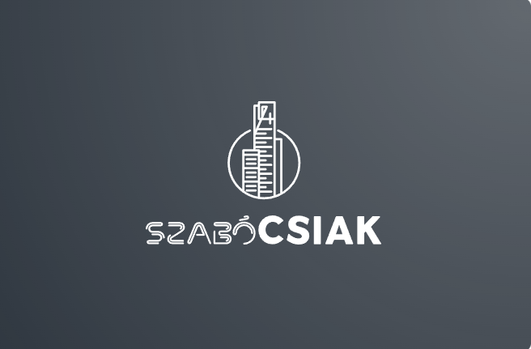

A csapat neve Szabócsiak
Ez a projekt egy robot építéséről és programozásáról szól és annak felvezetéséről és teszteléséről.
Absztrakt: Az ipari robot legfőbb előnye a hagyományos automatizálással szemben a programozhatóság. A robotok tetszőleges sorozatokat hajthatnak végre előre tárolt mozgásokból vagy az érzékelési bemenet függvényeiként kiszámított mozgásokból. Ez a cikk áttekinti a robotprogramozási rendszerek követelményeit és fejlesztéseit. A dolgozatban vizsgált robotprogramozási rendszerekkel szemben támasztott legfontosabb követelmények az érzékelés, a világmodellezés, a mozgásspecifikáció, a vezérlés áramlása és a programozási támogatás területére vonatkoznak. A meglévő és javasolt robotprogramozási rendszerek három nagy kategóriába sorolhatók: irányító rendszerek, amelyekben a felhasználó végigvezeti a robotot a végrehajtandó mozdulatokon, robotszintű programozási rendszerek, amelyekben a felhasználó egy számítógépes programot ír, amely meghatározza a mozgást és az érzékelést, valamint feladat szintű. olyan programozási rendszerek, amelyekben a felhasználó az objektumokra gyakorolt kívánt hatás alapján határozza meg a műveleteket. A cikkben az egyes kategóriák rendszereinek reprezentatív mintáját vizsgáljuk meg.
Tárgyalja a robot pontosságát és ismételhetőségét, valamint a robotok mechanikai és vezérlési szempontjait, amelyek a statikus pozicionálás és a dinamikus útkövetés során fellépő hibákhoz vezetnek. Felvázolja azokat a lépéseket, amelyeket meg kell tenni a hibák minimalizálása érdekében, és arra a következtetésre jut, hogy a robothasználóknak ösztönözniük kell a gyártókat az ISO és ANSI szabványok használatára a robot képességeinek mérése és bemutatása során. Ez nem csak a felhasználók számára teszi lehetővé a rendszerek objektív összehasonlítását, hanem arra is ösztönzi a robotgyártókat, hogy jobban megértsék az általuk értékesített termékeket.